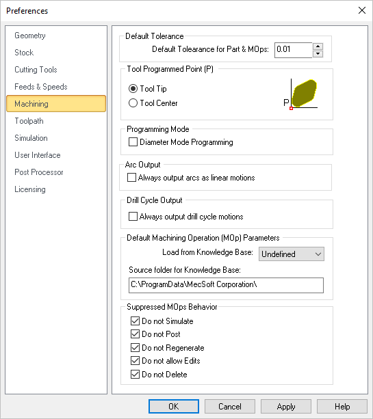

Users can set the machining preferences using this dialog.
 Dialog Box: Set Machining Preferences |
Default Tolerance for Part & Mops Enter the default tolerance to use for the TURN Part definition as well as for new machining operations. You can edit this parameter manually from the Cut Parameters tab of each machining operation (Mop) dialog. |
The toolpath can be output as the tool tip or the tool center. If the output is set to be the tool center, the toolpath will be offset by the difference in the height of the tool tip and tool center. The default value is the tool tip. |
Check the box to program in Diameter Mode for Turning. With this box checked, your posted g-code will output diameter values for the X axis. Make sure your Turn Machine Controller is set to the appropriate mode. |
Some of the controllers do not handle arc outputs (for example G2, G3). For such type of controllers, the arcs that are generated in the TURN module toolpath can be output as linear segments using this option. |
Check this box to always output drill cycles as linear motions. Left unchecked and the output is a canned drill cycle. Example g-code for the Fanuc post is shown below:
|
Allows you to select a Default Knowledge Base to load for creating machining operations. Selecting a knowledge base as Default loads the operation parameters when creating new operations. If no Default Knowledge Base is specified, the system defaults are used for machining operation parameters.
Refer to the following section for creating Default Knowledge Base |
When you Suppress Machining Operations (Mops) you can apply one or more of these conditions. Check each box to enable that condition and then pick OK to close this dialog. |